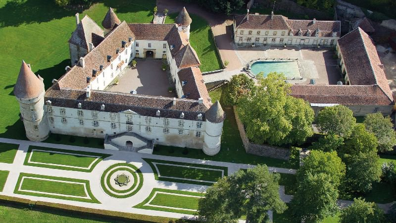

MANGIACOTTI


La Bourgogne, une région empreinte d'histoire et de charme, m'a accueilli lors d'un voyage mémorable. De ses vignobles renommés à ses châteaux pittoresques, chaque coin de cette contrée dévoile une richesse culturelle et architecturale unique. Au cours de cette aventure, mes pas m'ont guidé vers les réalisations impressionnantes de Sébastien Le Prestre de Vauban, l'architecte militaire du Roi Louis XIV.
Sébastien Le Prestre de Vauban, célèbre ingénieur militaire du XVIIe siècle, a laissé son empreinte indélébile sur la Bourgogne. Les fortifications conçues par Vauban, aujourd'hui inscrites au patrimoine mondial de l'UNESCO, témoignent de son génie stratégique. Le château de Bazoches, transformé par Vauban en école militaire, offre une plongée captivante dans l'histoire militaire de la région.
Au fil de ma visite, j'ai eu le privilège de déambuler dans les citadelles fortifiées que Vauban a érigées pour protéger la Bourgogne des invasions. Les remparts de Besançon, avec leur architecture défensive innovante, m'ont transporté à une époque où la sécurité des citoyens dépendait de la robustesse des murailles. Cette immersion dans les cités fortifiées de Vauban offre une perspective unique sur la vie militaire du Grand Siècle.
Au-delà des forteresses, la Bourgogne m'a également séduit par ses vignobles et ses châteaux majestueux. Les coteaux de la Côte de Beaune et de la Côte de Nuits, réputés pour leurs vins d'exception, dévoilent un paysage pittoresque qui contraste avec l'aspect martial des constructions de Vauban. Cette juxtaposition entre la beauté naturelle et la force militaire crée une atmosphère singulière.
Mon voyage en Bourgogne s'est révélé être une expérience riche en découvertes et en émerveillements. Entre les vignobles gorgés d'histoire et les forteresses imposantes de Vauban, chaque étape a contribué à tisser le récit fascinant de cette région française. La Bourgogne, avec son mélange harmonieux de patrimoine viticole et militaire, se présente comme un incontournable pour les amateurs d'histoire et de paysages enchanteurs.
Page précédente